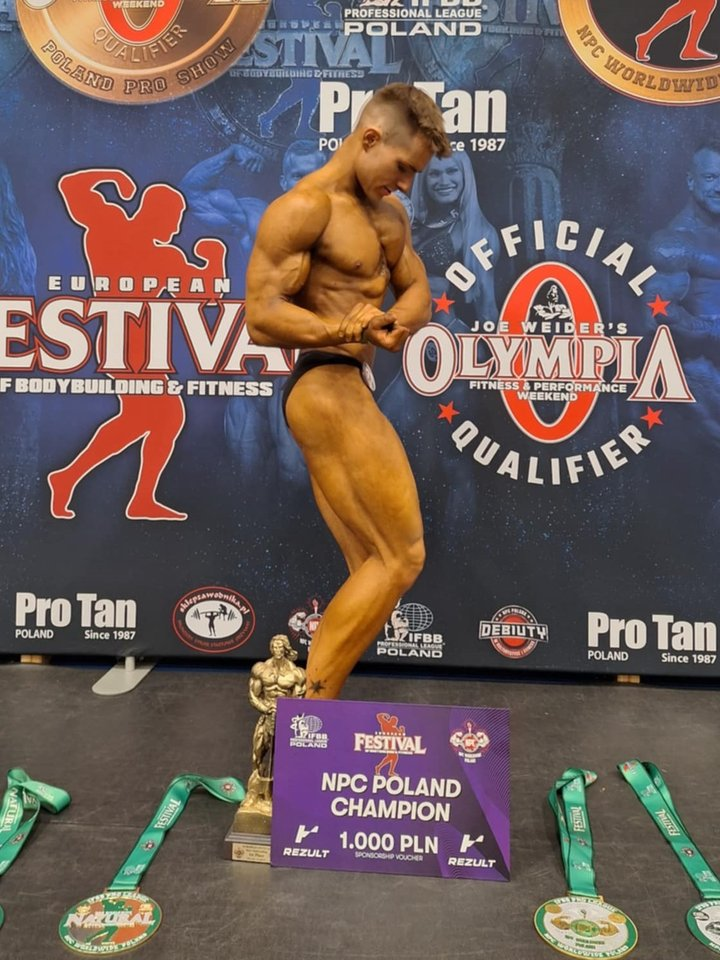
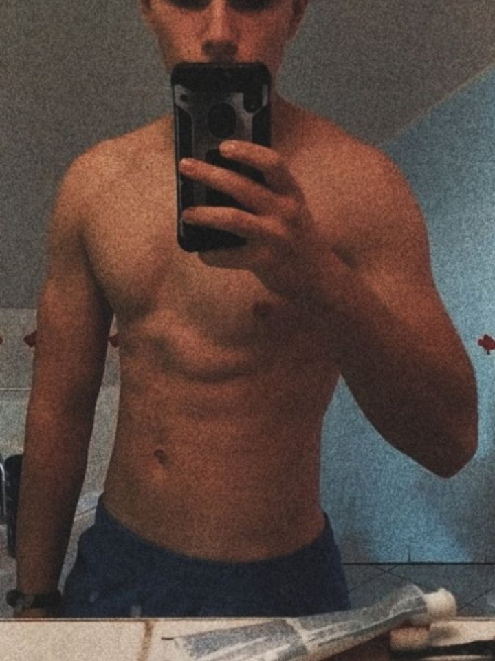
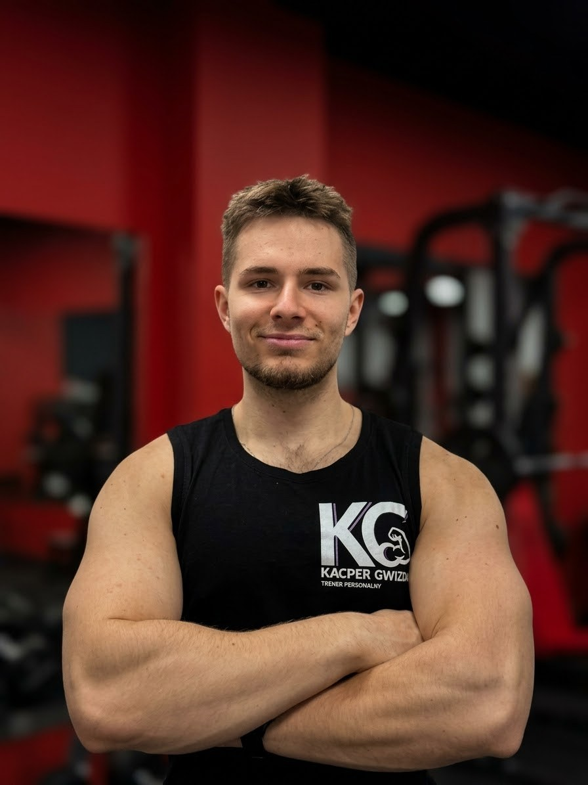
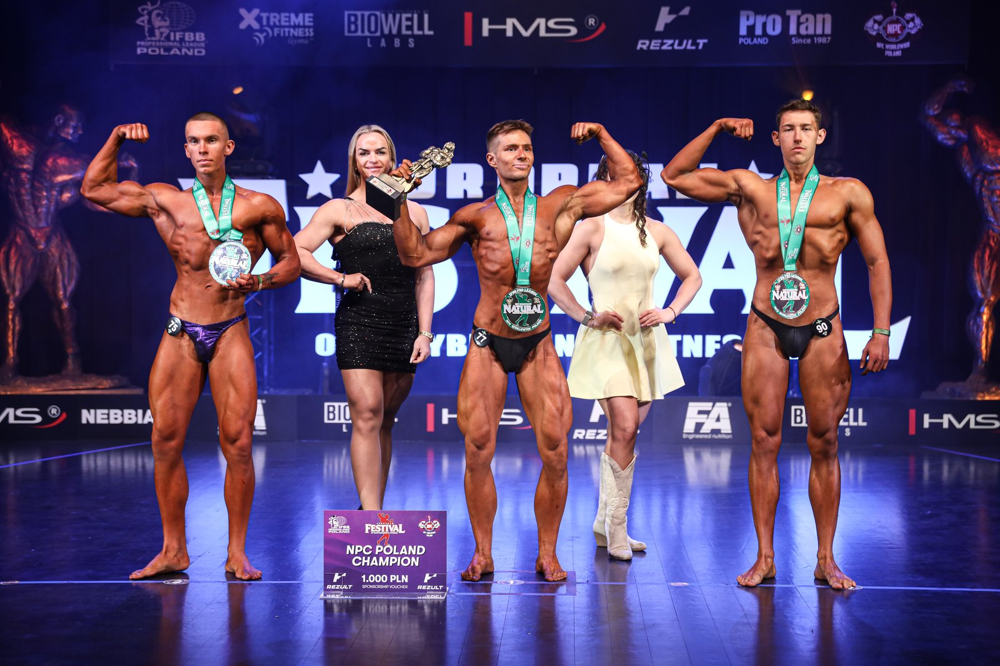
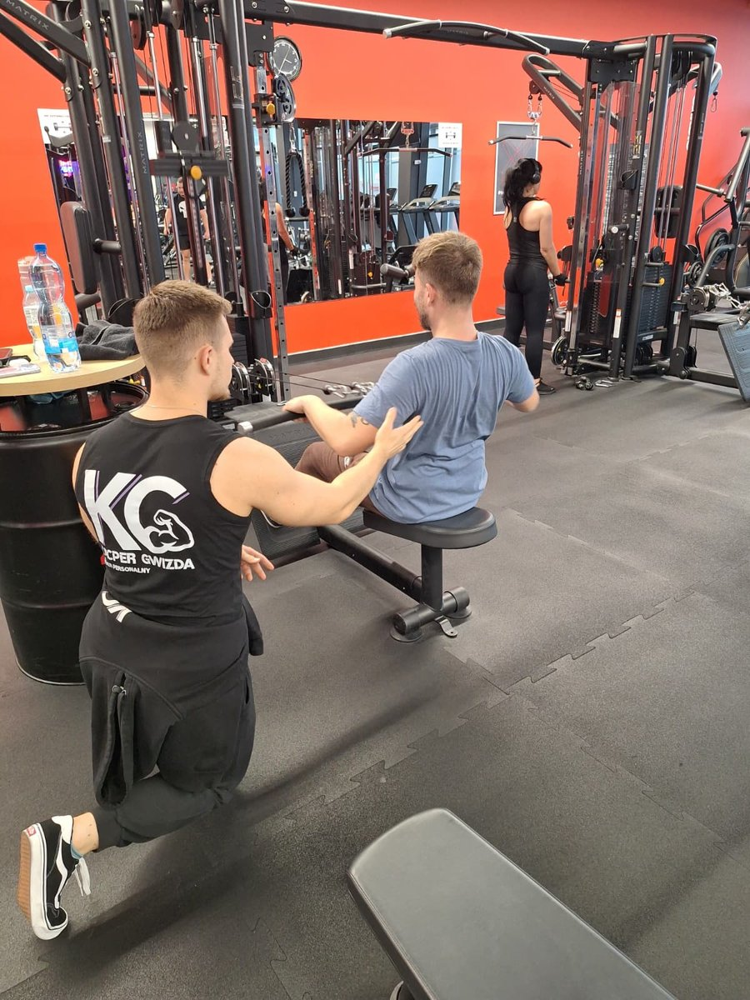
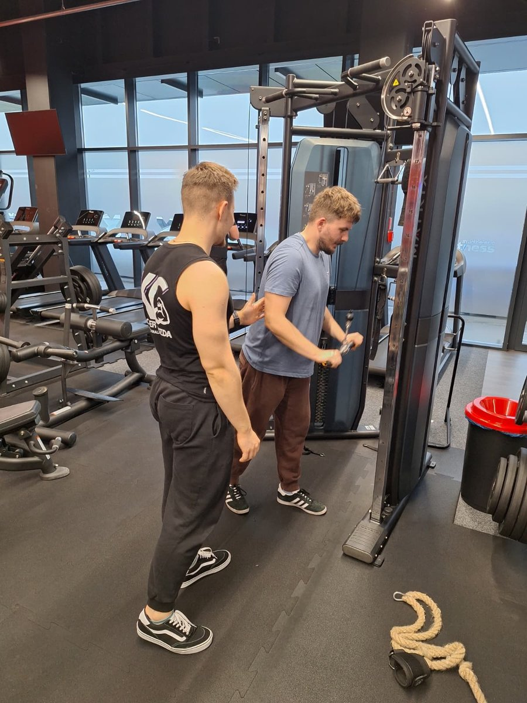

Pomagam zapracowanym zrzucić brzuch, pozbyć się bólu i polubić ruch. Na sali w Chełmży i online — bez presji i głodówek.

Jako chudy nastolatek nie miałem pojęcia o treningu ani diecie. 7 lat nauki i pracy na sobie — od pierwszych pompek do 1. miejsca w zawodach juniorów. Wiem, jak trudny jest start, dlatego prowadzę spokojnie, krok po kroku.
Zaczynałem jak większość — z pasją, ale bez wiedzy. Dziś przekładam lata nauki i własne doświadczenia na prosty plan dla Ciebie.
Sport to moja pasja od zawsze. Skolioza nauczyła mnie, jak ważny jest trening bez bólu.
Lata treningów i ciągłej nauki — najpierw na sobie, potem z innymi.
Kurs trenera personalnego oraz szkolenia z programowania treningu, dietetyki, suplementacji i testów funkcjonalnych.
Prowadzę podopiecznych w Xtreme Fitness Chełmża i online. Startuję w zawodach — m.in. 1. miejsce w kategorii juniorów.
Zaczynamy od Twojego poziomu. Każdy kiedyś zaczynał.
Technika i mądra progresja — forma ma zostać na lata.
Uczę jeść normalnie, a nie żyć na sałatkach.



Pierwszy krok jest najtrudniejszy. Umów bezpłatną konsultację w Chełmży albo zacznij online — gdziekolwiek jesteś.